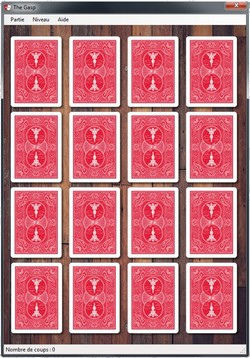
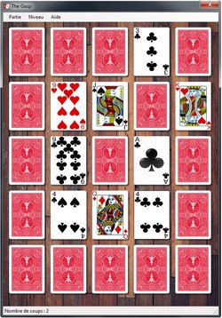

Le Gasp (version basic)
10 T = 5: REM TAILLE 4 x 4
20 HOME : REM EFFACE ECRAN
30 REM *---<AFFICHAGE>---*
40 PRINT "...1.2.3.4"
50 FOR Y = 2 TO R
60 PRINT : PRINT : PRINT : PRINT Y - 1;
70 FOR X = 2 TO T
80 HTAB X * 2: VTAB Y * 2
90 IF A(X,Y) = 1 THEN PRINT "X";
100 IF A(X,Y) = 0 THEN PRINT "O";
110 NEXT X: NEXT Y
120 REM *---<CHOIX.JOUEUR>---*
130 PRINT : PRINT : PRINT : PRINT "NC="NC: PRINT: PRINT
140 INPUT "X=";X:INPUT "Y=";Y
150 NC = NC + 1;
160 X = X + 1: Y = Y + 1
170 FOR YT = Y - 1 TO Y + 1
180 FOR XT = X - 1 TO X + 1
190 IF XT = X AND YT = Y THEN 220
200 IF A(XT,YT) = 1 THEN A(XT,YT) = 0: GOTO 220
210 A(XT,YT) = 1
220 NEXT XT,YT: GOTO 20
Le Gasp (version Qbasic)
Quand j'ai redécouvert ce bout de code à la fin de l'année 2017, j'ai eu comme un coup de coeur. Pour le tester, je me suis tourné vers QBasic 64 dans sa version 1.1. A l'heure de nos machine ultra puissante, c'était, à mes yeux, la meilleure solution. Je sais que j'aurais sans soute pu utiliser un émulateur, mais où aurait été le fun ? Comme vous pouvez le constater, il s'agit d'un jeu 100% en mode texte, comme celui de 1985. Si le coeur vous en dit, le code source en Basic et son executable son sur mon GitHub (dossier sources puis Qbasic).
Le Gasp (version VB.Net)
La version Qbasic fonctionne sans trop se poser de question, mais il faut avouer qu'elle n'est pas trés jolie. On pourrait imaginer des couleurs ou un message qui indique que le joueur à réussi. C'est ainsi qu'est née la version en VB.Net ! J'ai juste remplacé les pions par des cartes. Cette fois, le code source n'est pas à votre disposition, mais vous pouvez télécharger l'executable pour essayer le jeu chez vous, tranquillement. Petit plus : Vous pouvez y choisir une grille 4 x 4 ou une grille 5 x 5 selon le niveau de difficulté que vous désirez.
 
Le Gasp (version Javascript)
Je sais qu'installer quelque chose sur son PC à l'heure actuelle est devenue compliqué. On ignore d'où vient le truc, on a peur des cookies, des traceurs, des virus, des malwares et de toutes les mauvaises épidémies qui trainent un peu partout sur le net. C'est pour cette raison que j'ai eu envie de créer cette version du Gasp qui est jouable en ligne gratuitement. Si j'ai bien calculé mon coup, le site est même "mobile friendly", ce qui veut dire qu'il va s'adapter en fonction du support que vous utilisez : tablette, ordinateur ou même téléphone. Vous pouvez jouer en cliquant ici et comme pour la version Basic, le code est dispo sur mon GitHub.